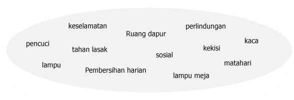

Aktiviti 2: Isi tempat kosong
Isikan tempat kosong dengan perkataan yang sesuai dari kelompok perkataan di bawah
Markah terkumpul setakat ini

- Pintu dan tingkap perlu dibuka semasa menjalankan aktiviti di bengkel supaya mendapat yang baik.
- Murid-murid seharusnya mendapatkan panduan dan nasihat daripada terlebih dahulu jika tidak tahu cara-cara menggunakan sesuatu peralatan di bengkel.
- Untuk mendapatkan maklumat tentang sesuatu projek dan mengetahui langkah-langkah untuk membuat projek tersebut, kamu boleh merujuk kepada
- Penggunaan bahan dalam menghasilkan sesuatu projek dapat menjimatkan kos.
- lama merupakan antara contoh bahan kitar semular yang dapat digunakan untuk menghasilkan projek.
- berfungsi untuk mengalirkan arus elektrik dalam litar.
- Arus elektrik dalam litar dibekalkan oleh
- Gergaji tangan perlu disapu dengan minyak pelincir supaya tidak mudah
- Setiap alatan tangan perlu dari semasa ke semasa untuk memastikan alatan tersebut sentiasa berada dalam keadaan yang baik dan selamat digunakan.
- Kita boleh menggunakan untuk menanggalkan kesan cat minyak yang tertumpah di atas meja.